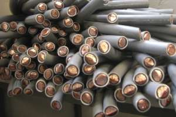
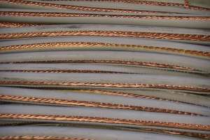

Wir verwenden Cookies, um zu verstehen, wie Menschen unsere Website nutzen.
Durch die Nutzung unserer Website erklären Sie sich mit der Verwendung von Cookies einverstanden. Weitere Informationen finden Sie in unsereren Datenschutzbestimmungen.
Sie sind auf unsere Webseite gelandet weil Sie haben nach Kabel Entsorgung, Kupferkabel Recycling, Kupferkabel entsorgen, Kabel entsorgen, Kupferkabel verkaufen, alte Kabel entsorgen, Kabel entsorgen Zürich oder Kabel entsorgen Schweiz gesucht. Sie sind da richtig!
Was ist Millberry?
Kupfer Millberry bezeichnet man saubere Kupferdrähte mit einem Durchmesser von mindestens 1 mm. Der Draht muss von der Isolation mechanisch getrennt worden sein, ohne Anhaftungen von Schmutz oder Rückstände und sauber vom Abbrennen der Isolation. Millberry-Kupfer zeichnet sich durch klare glänzende rot-gelb Farbe aus.
Kupfer Berry bezeichnet man leicht oxidierter Kupferdraht aus Kupferkabel.
Kupfer-Raff ist dann oxidiertes unsauberes Kupfer mit einer Reinheit von mindestens 95 bis 96 Prozent Kupferanteil.
Kabel Recycling
Kabel sortieren
In unserer eigenen Werkstatt mit Kabelschellmaschine werden Kupferkabel (alte Elektrokabel, Seil oder Millberry) von der Ummantelung
getrennt. Als Produkte aus Kupfer erhalten wir
sortenreine Kupfergranulate der
verschiedensten Qualitäten und verwertbares
Kunststoffgranulat.
Wir bieten Kabelwerken
günstige Umarbeitungskonditionen ihrer
Kupferkabel Schrotte und Rückführung des
Kupfer in Form von Kathoden an.
Sach- und Fachkunde ist bereits beim
Wareneingang gefragt. Die Kabel müssen
zunächst sortiert und klassifiziert werden.
Sortierkriterien sind: Kupfergehalt,
Durchmesser, Erd-, Blei-, oder Alu-Kabel.
Alle Kabel sollten frei von Steckern,
Anschlüssen und Dosen sein. Einen geringen
Kupferanteil haben z.B. TV- und
EDV-Koaxialkabel, die gesondert bewertet
werden.
Kupferkabel Vorzerkleinerung

Nach der Sortierung werden die Kabel in einem starker
Shredder zerkleinert. Nach dem Shreddern
sind die Kabelstücke, unabhängig der
vorherigen Länge und Dicke, noch ca. 2 - 20
cm lang und zum Granulieren bereit.
Kupferkabel Shredder Der Shredder arbeitet
mit zwei entgegenlaufenden Wellen, auf denen
Messerscheiben mit Haken montiert sind. Pro
Haken werden die Kabel mit einer Kraft von 6
t zerrissen. Das zerkleinerte Material wird
im Kreislauf über verschiedene
Förderstrecken, Bandanlagen, Vorratsbunker
und Waage zur Schneidmühle und im Kreislauf
zu den Schneidmühlen geführt. In beiden
Kreisläufen wird das Material soweit
geschnitten bzw. die Wertstoffe (Kupfer,
Aluminium) von der Isolierung freigelegt,
dass durch die nachfolgende Trennung mittels
unterschiedlicher
Leicht-Schwermetall-Trennverfahren (Luft,
Masse, Vibration) eine sortenreine Gewinnung
der einzelnen Komponenten (Wertstoffe und
Abfall) gesichert werden kann.
Kupfergranulat
Auf der anderen Seite des Separationstisches erhalten wir nun das
reines Elektrolyt-Kupfergranulat (99,9 %).
möglichen Granulate: Cu-Granulat 10C min.
98,5 % Cu Cu-Granulat 10B min. 99,5 % Cu
Cu-Granulat 10A min. 99,97 % Cu
Al-I-Granulat Körnung 2 mm Al-I-Granulat
Körnung 3-5 mm Al-I-Granulat Körnung 6-8 mm
Kunststoffgranulat
Die Trennung des
Granulats erfolgt auf dem Separationstisch
durch Vibration und Luftströmung, aufgrund
des spezifischen Gewichts der einzelnen
Fraktionen. Auf der einen Seite des
Separationstisches erhalten wir ein
Kunststoffgranulat, das praktisch frei von
Kupferrückständen ist.
Kabel Recycling Resultat

Kupfermengen in Produkten zählen zu
den Weltmetallreserven. Eine
Wiederverwertung der Kupfer
als Sekundärrohstoffe schont die natürlichen
Ressourcen. Gegenüber der Neuproduktion
erfolgt sie mit einem geringeren
Energieaufwand und vermeidet die stoffliche
Ablagerung auf Deponien.